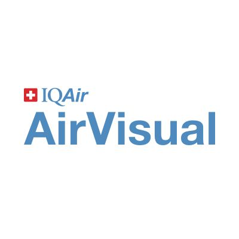

AirVisual is a mobile application designed to provide users with real-time air quality information and forecasts. It offers global coverage, allowing users to access air quality data for locations worldwide. The app monitors various pollutants such as PM2.5, PM10, nitrogen dioxide (NO2), and ozone (O3), enabling users to stay informed about local air pollution levels and make informed decisions about outdoor activities and travel plans. With personalized alerts and historical data tracking, AirVisual empowers users to take proactive measures to protect their health and advocate for cleaner air.
It provide features such as:
1.Real-Time Air Quality Data: AirVisual provides users with real-time information on air quality levels, including measurements of pollutants such as PM2.5, PM10, nitrogen dioxide (NO2), and ozone (O3), helping users stay informed about local air pollution levels.
2.Global Coverage: The app offers global coverage, allowing users to access air quality data for locations worldwide, whether they're at home or traveling, enabling them to make informed decisions about outdoor activities and travel plans.
3.Air Quality Forecasts: AirVisual offers air quality forecasts, providing users with predictions of future air quality conditions based on weather patterns and pollution trends, helping them plan ahead and take proactive measures to protect their health.
4.Personalized Alerts: Users can set up personalized alerts to receive notifications when air quality levels in their area reach unhealthy levels, empowering them to take precautions such as staying indoors or using air purifiers to minimize exposure to pollutants.
5.Historical Data: AirVisual allows users to access historical air quality data, enabling them to track trends over time and gain insights into long-term changes in air pollution levels in their area.
6.Community Engagement: The app fosters community engagement by enabling users to share air quality information with others, raising awareness about the importance of air quality monitoring and encouraging collective action to address air pollution issues.